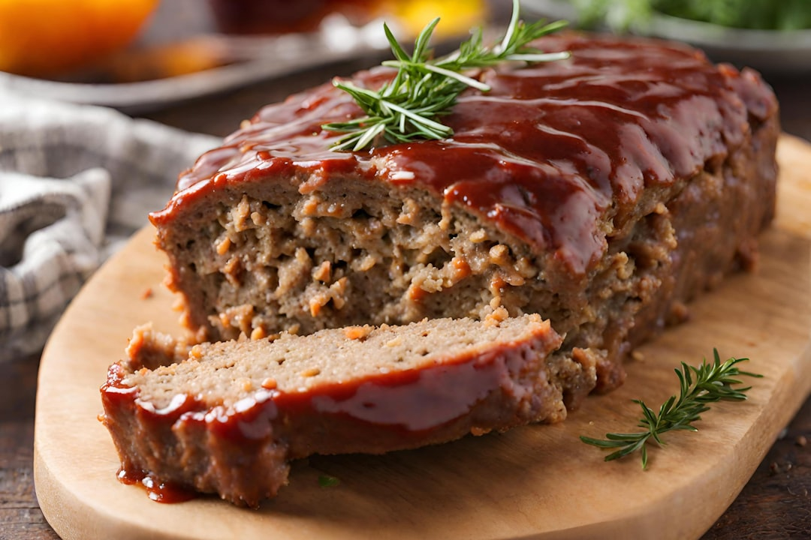

Bartholomew "Bart" Pruss · Senior Cataloguer · Field Report
On the Edible Entry: A Classification Problem the Catalogue Was Not Built to Solve
Three entries arrived this week from the kitchen. The Senior Cataloguer has reviewed them, reluctantly, and has a position.

Three Edible Entries, One Week, No Framework
I have been cataloguing objects of unusual girth since 1978. Ships, initially. Then excavators. Then, in what I still regard as a regrettable editorial pivot circa 1994, sofas. The catalogue has expanded in directions I did not anticipate and, in several cases, did not endorse. I have filed the relevant objections. They are in the records.
This week, three of the seven published entries were edible. The Loaf, Meatloaf arrived Friday. The Mango, Honey Ataulfo preceded it by a day. The Sundae, Banana Split appeared midweek. I have reviewed all three. I have not yet determined whether reviewing them constitutes an endorsement of the category. I am leaning toward no.
What the Style Guide Actually Says
Per Style Guide section II.3, a qualifying entry must possess girth that is (a) measurable, (b) structural, and (c) resistant to casual reduction. The third criterion is where the edible entries begin to strain the framework. A meatloaf, however considerable its dimensions in the pan, does not resist casual reduction. It invites it. That is its purpose.
The Honey Ataulfo mango is a narrower case. It is a variety bred specifically toward density and volume, and its girth is its primary credential. The fruit does not apologize for its dimensions. I respect this. I have not confirmed whether the entry arrived through the standard intake process or via the informal channel the Junior Cataloguer has been operating since March. I have a memo pending on that subject.
Why the Kettle Qualifies and the Sundae Does Not
The Kettle, Cast Iron Tea is the week's most defensible entry, and I want to be precise about why. Cast iron construction means the wall thickness is not incidental to the object's function. The kettle retains heat because it is thick. The girth is the mechanism. This is the standard Eliza Hartwell outlined in her May piece on girth in service of purpose, a piece I found adequate, if somewhat optimistic about the beanbag chair.
The banana split sundae will not survive the afternoon of its own entry. The Bagger 288 is 220 metres long, weighs 13,500 tonnes, and has been digging since 1978. When I stood one kilometre from it, it was still there when I left. The sundae presents no equivalent assurance. Per Style Guide section II.3, the catalogue records objects that persist. A sundae is not an object. It is a schedule.
A Proposal for the Edible Subcategory
I am not, despite what the Junior Cataloguer has apparently told the circulation desk, opposed to edible entries on principle. I am opposed to edible entries that have not been properly classified. There is a difference, and I would have expected seventeen years of published style guidance to have made this clear.
What I am proposing, drafted as a formal addendum to Style Guide section IV.1, is a distinction between dimensional entries and ephemeral entries. A dimensional entry possesses girth that is measurable, reproducible, and independent of the specific instance catalogued. The Honey Ataulfo mango variety, taken as a variety rather than as a single fruit, may qualify. The meatloaf, as a category of object rather than as Tuesday's specific loaf, may also qualify. The banana split sundae is a harder case. I am still reviewing. I raised this at Tuesday's meeting. The Junior Cataloguer said something about impermanence being philosophically interesting. I have filed objection #48 with the records desk.
The Hummer H2, Limousine and the Engine, V8 Crate also arrived this week, without classification problems. I note this for the record. Some weeks are easier than others.
A new entry every morning. Get it delivered.